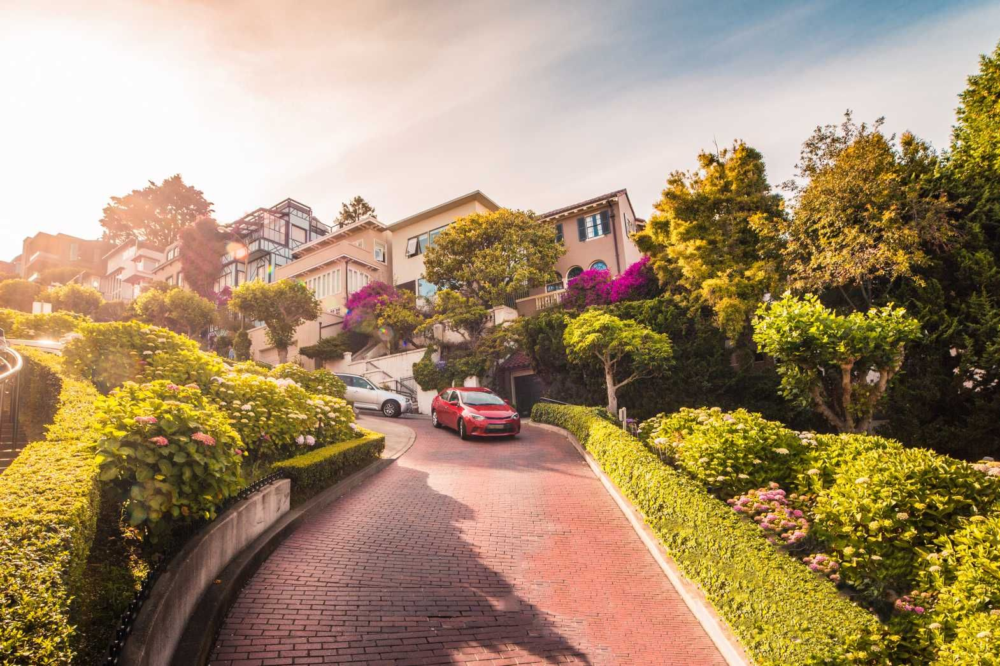

Capture a scene
Take a photo of the world around you, or start from a ready scene.
Click
Upload
 Starting analysis…
Starting analysis…
Or practise with the below

Hillside drive
Across the bay

Scene analysis
Finding objects in your image…
This will only take a moment.
Check what this lesson will use
1
la libreta
notebook ✓
notebook ✓
2
el lápiz
pencil ✓
pencil ✓
3
el portátil
laptop ✓
laptop ✓
4
el móvil
phone ✓
phone ✓
5
la planta
plant ✓
plant ✓

Your camera roll is the textbook.
IN BETA
learnwithlinguini.com